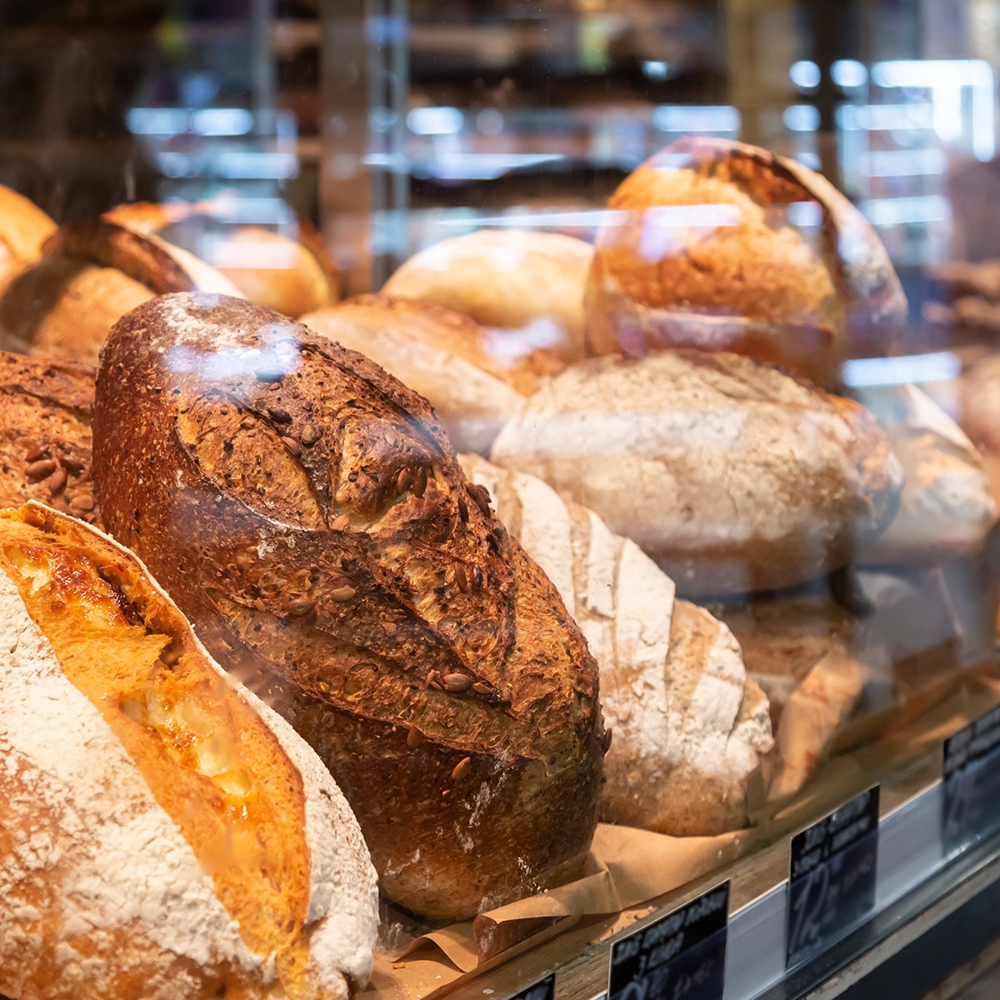

Our Products
Everything is baked fresh in our kitchen. Prices are listed as ranges because they depend on size. There is no online checkout, so to reserve something, send us a pre-order request.

Fresh Every Morning
Our bakers start before sunrise so the shelves are full when we open. Breads usually sell out by the afternoon, so pre-ordering is the best way to make sure you get your favorite.